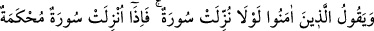
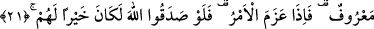
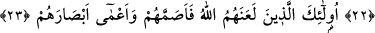
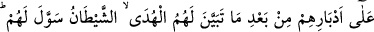
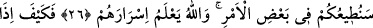

ONLAR KUR’ÂN’I
DÜŞÜNMÜYORLAR MI?
20. İnananlar: “(Savaş hakkında) bir sûre indirilmeli değil miydi?” derler. Fakat
hükmü açık bir sûre indirilip de onda savaştan söz edilince, kalblerinde hastalık
bulunanların sana ölümden bayılıp düşen kimsenin bakışı gibi baktıklarını görürsün.
Onlara ölüm gerektir.
21. Onlara düşen, itâat etmek ve güzel söz söylemektir. İş ciddiye bindiği zaman
Allah’a verdikleri söze sadık kalsalardı, elbette kendileri için daha iyi olurdu.
22. Demek işbaşına gelecek olursanız, yeryüzünde bozgunculuk yapacak,
rahimleri (akrabalık bağlarını) koparacaksınız öyle mi?”
23. Onlar, Allah’ın lânetleyip sağır yaptığı ve gözlerini kör ettiği kimselerdir.
24. Kur’ân’ı(n anlamını) düşünmüyorlar mı? Yoksa kalbler(inin) üzerinde
kilitleri mi var (ki hiçbir hakikat, gönüllerine girmiyor)?
25. Kendilerine doğru yol belli olduktan sonra arkalarına (yine eski küfürlerine)
dönenlere, şeytân hatâlarını süslemiş ve (günâh işlemelerini) kolaylaştırmış ve
onları uzun emellere, umutlara düşürmüştür.
26. Bu böyledir. Çünkü onlar, Allah’ın indirdiğinden hoşlanmayanlara: “Bazı
hususlarda size itâat edeceğiz” dediler. Oysa Allah, onların gizlediklerini biliyor.